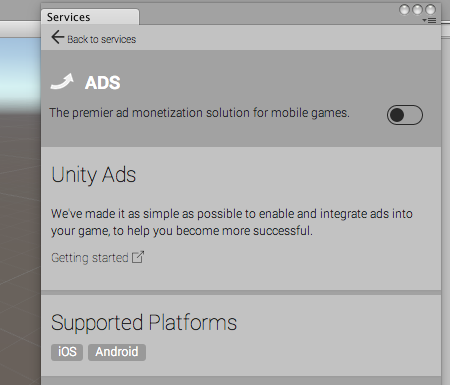
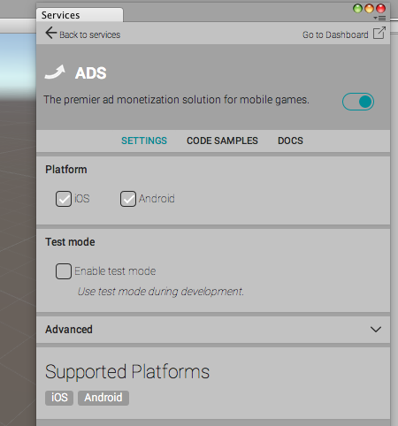
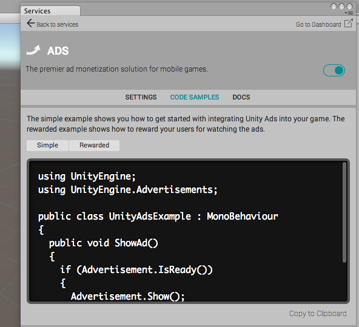

Enabling advertisement and monetizing your games has been made as easy as possible with Unity.
Step 1: Enable ads for your game in the Editor
Open the Ads configuration window from Window > Services > Ads

Click the switch on the rigght-hand side to turn Ads on, then answer a few questions about the game you are making.

Ads are now enabled for your game.
Step 2: Add code to your game
You can use code samples to implement ads in your game. Go to the Code samples tab and copy the relevant script snippets to your C# code (for example, during the loading scene or at the end of your game).

Add Code
There are code samples for:
Simple: Easy to use for simple fullscreen interstitial ads (for example, to appear between game levels)
Rewarded: Show an ad with a result callback. You can use this to give your players in-game rewards (such as coins, gems, points or extra lives) for watching an ad.
If you have previously used Unity Ads using the Asset Store package: what has changed?
You do not need to register to Unity Ads self-serve admin; instead, an account is created for you (if you don’t already have one) when you first enable ads in the editor.
You do not need to create game profiles in self-server admin; game profiles and IDs will be created automatically when you enable ads in your project.
You don’t need to initialise the ads system in your code, initialisation happens in the background.
API changes: method names have been changed to be in line with normal C# naming conventions. (isReady => IsReady etc.), also pause option has been removed as it was only used for picture ads.